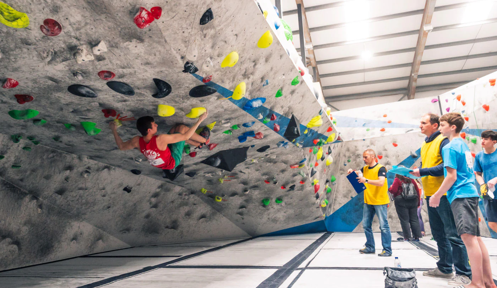
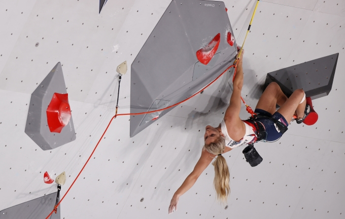

<!DOCTYPE html>
<html lang="en">
<head>
    <meta charset="UTF-8">
    <meta name="viewport" content="width=device-width, initial-scale=1.0">
    <title>Climbing: A Meditative Freedom</title>
    <link rel = "stylesheet" href = "./stylings1.css">
</head>
<body>
</body>
</html>
    <header> 
        <h1>A Meditative Freedom</h1>
    </header>
    <main>
        <h2>Why I enjoy it:</h2>
        <p>
            It has its surface level merits (its fun), I also feel it aligns you with the present no matter what troubles you at that time. the movement and intensity makes it so you are aware of your surroundings at all times, really forces you to push yourself outside of your head. Some other things I enjoy that are associated with climbing:
        </p>
        <ul>
            The community - very positive where people will cheer you on or will always help you out if you're stuck on a bouldering problem.
        </ul>
        <ul>
            <a href = "https://www.depotclimbing.co.uk/birmingham/" target = "_blank">The gym</a> itself - The environment matters a lot to me and my gym is essentially a playground for adults which is a win in my book AND they do pizza and coffee!
        </ul>
        <ul>
            The artistry - Seeing people come up and you yourself coming up with your own solutions (beta) to a problem is always fulfilling, especially when its a hard problem.
        </ul>
        <h2>The setup for climbing:</h2>
        <ol>
            <li>Climbing Shoes</li>
            <li>Chalk</li>
            <li>That's literally it</li>
        </ol>
        <p>
            Optionally also you can use chalkbags and brushes.
        </p>
        <h3>The types of climbing:</h3>
        <li>Bouldering (the one I do):</li>
        
        <li>Sports Climbing (which is also now an olympic sport):</li>
        
        <li>The most risky type of climbing where the climber has no harnesses or rope while climbing a long route:</li>
        
        
    </main>
    <footer></footer>